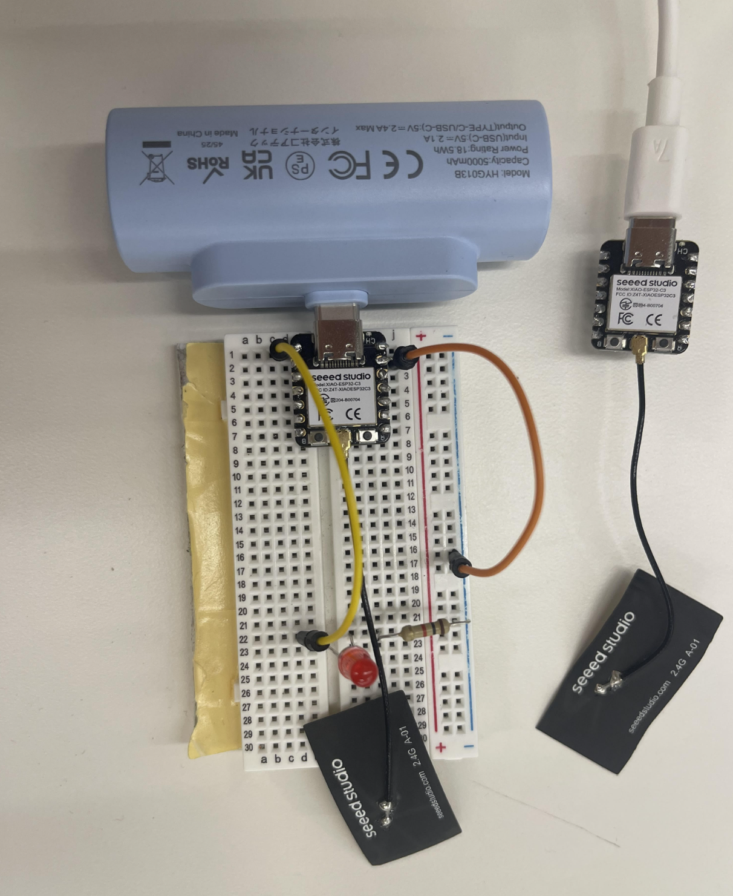

I worked with Otavio on this assignment, which was an upgrade from Otavio's week 4 assignment His weeek 4 assignment was a microcontroler program that was able to translate text into morse code using an led. We upgraded the week 4 project by making the device wireless by sending the input from a microcontroler connected to the computer to a wireless microcontroler.

Wiring Image
The circuit is very simple as the microcontroler connect to the laptop just has an attena to send the input to the wireless microcontroler. The microcontroler has a wire connected to A0 that connects to the postive side of the LED, the current goes though the led into a resistor that is connected to another wire which goes to GND.
This is the code for the microcontroller connected to the computer. The code requests for a word entered into the serial monitor which is sent wirelessly to the wireless microcontroller, when the code is sent and convereted to morse code it receives an OK from the wireless microcontroler to reset the serial monitor allowing the user to send another word.
#include "WiFi.h"
void setup(){
Serial.begin(9600);
WiFi.mode(WIFI_MODE_STA);
Serial.println(WiFi.macAddress());
}
void loop(){
}
The MacChecker code is the code that is used to identify and print out the ESP32's MAC adress in the serial monitor which allows the user to identify the board so that the boards can communicate to each other through ESP-NOW.
This is the code for the wireless microcontroler. The code takes the message that is sent from the microcontroler connected to the computer and converts each letter into morse code through an LED using the speed of each blink and downtime between each blink. After the code is transmitted it sends an OK back to the microcontroller connected to the computer.